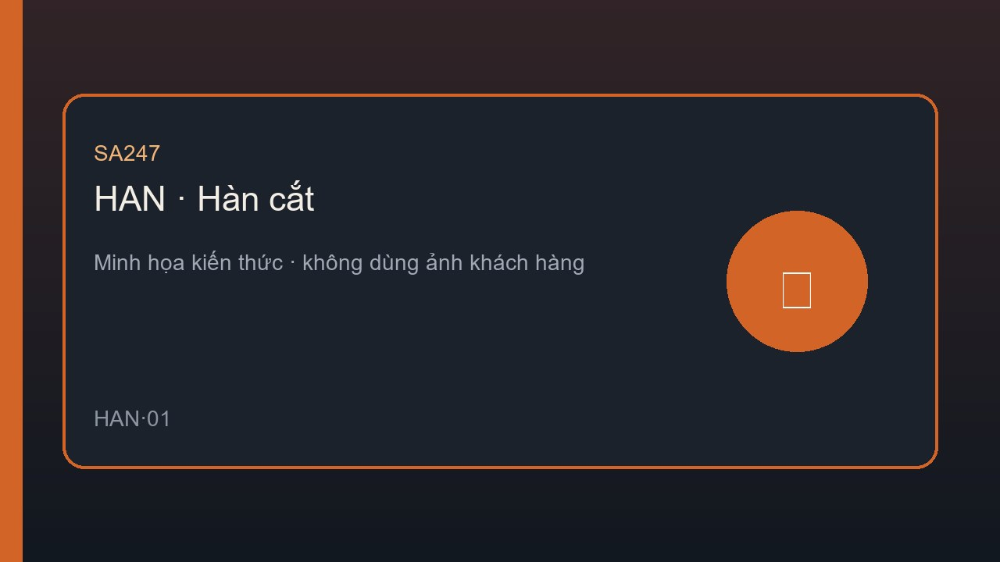

Bài viết · HAN-01 · Đợt 2
Cháy lan sau hàn — vì sao xảy ra sau giờ
Cháy lan sau hàn — vì sao xảy ra sau giờ là một trong ba bài kiến thức miễn phí đi kèm chương trình HAN-01 — An toàn hàn cắt của SA247.
Bài viết này tập trung nhận diện nguy cơ và các lỗ hổng kiểm soát thường bị xem nhẹ trên hiện trường Việt Nam. Nội dung viết bằng tiếng Việt, hướng thực địa, không thay thế quy định nội bộ nhưng giúp bạn có khung để đối chiếu ngay.

Bức tranh rủi ro của An toàn hàn cắt
An toàn hàn cắt không phải chủ đề “biết rồi thì thôi”. Trên hiện trường, rủi ro thường đến từ việc người ta quen đến mức bỏ qua kiểm soát, hoặc từ điểm giao giữa các tổ / nhà thầu / ca làm việc.
Bài viết này tập trung nhận diện nguy cơ và các lỗ hổng kiểm soát thường bị xem nhẹ trên hiện trường Việt Nam.
Những nguy cơ / lỗ hổng cần nhìn trước
- Tia lửa âm ỉ
- Không canh sau hàn
- Vật liệu cháy bị che
- Kết thúc ca sớm
- Thiếu kiểm tra lại
Vì sao các lỗ hổng này tồn tại
Áp lực tiến độ, thiếu brief, checklist mang tính hình thức, người mới chưa được kèm, và văn hóa ngại dừng việc là các lý do lặp lại. Muốn giảm rủi ro, phải sửa hệ thống — không chỉ nhắc cá nhân một lần.
Ghi nhớ thực địa: Nhắc miệng không thay được tiêu chí dừng việc viết rõ và được tuân thủ.
Hướng kiểm soát ưu tiên
Ưu tiên kiểm soát kỹ thuật và tổ chức trước PPE. Làm rõ ai giám sát, ai được dừng việc, bằng chứng nào cần có trước khi mở việc, và kênh báo cáo near-miss phải dễ dùng hơn im lặng.
Việc làm trong tuần này (1 hành động)
Chỉ chọn một việc — làm xong trong 7 ngày, có bằng chứng.
- Hành động: chọn một lỗ hổng của HAN-01 và đưa vào điểm dừng việc tuần này
- Bằng chứng: Ảnh / phiếu checklist có ngày giờ + chữ ký hoặc xác nhận giám sát
- Người chịu trách nhiệm: Người phụ trách HSE khu vực + giám sát trực tiếp
Ghi nhớ: Không có bằng chứng = chưa làm. Họp ngắn cuối tuần chỉ cần trả lời: đã làm / chưa / vướng gì.
Tóm tắt mang ra hiện trường
- Áp dụng ngay một điểm kiểm soát của HAN-01.
- Có tiêu chí dừng việc rõ ràng.
- Ghi nhận bằng chứng, không chỉ nhắc miệng.
- Brief / checklist trước khi mở việc.
- Near-miss phải được học, không chỉ bị bỏ qua.
Đọc miễn phí — khóa HAN-01 · An toàn hàn cắt sắp mở.
Bạn sẽ nhận thông báo khi khóa HAN-01 chính thức mở.